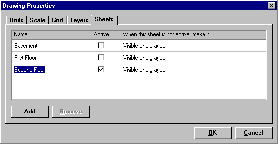

Rhvac and Chvac Drawing Techniques |
  
|
Rhvac and Chvac Drawing Techniques |
|
Drawing Multiple Story Floor Plans
To make a drawing that includes multiple floors, you will need to put each floor on a different sheet. This will allow you to line up the rooms on one floor with those on the other floors. For example, if you want to create a drawing that includes a basement, first floor and second floor, here's how to do it:
1.Open a new drawing and click the menu "Format | Sheets" to open the Drawing Properties dialog with the Sheets tab active.
2.Click the default sheet name "Default," change its name to Basement and press Enter.
3.Click the Add button and name the new Sheet "First Floor." Press Enter to accept the new sheet name.
4.Click the Add button again, type "Second Floor" for the new sheet name and press Enter. The dialog should now look like the picture below.

5.Click the OK button to accept the changes and close this dialog.
6.Click the "Current Sheet" combobox in the Drawing Board toolbar and change the current sheet to the Basement.
7.Draw the Basement floor plan by dragging and dropping Room (or Zone) objects onto the drawing.
8.When finished with the Basement, click the "Current Sheet" combobox and change the current sheet to the First Floor.
9.Draw the floor plan for the First Floor. Do the same thing for the Second Floor.